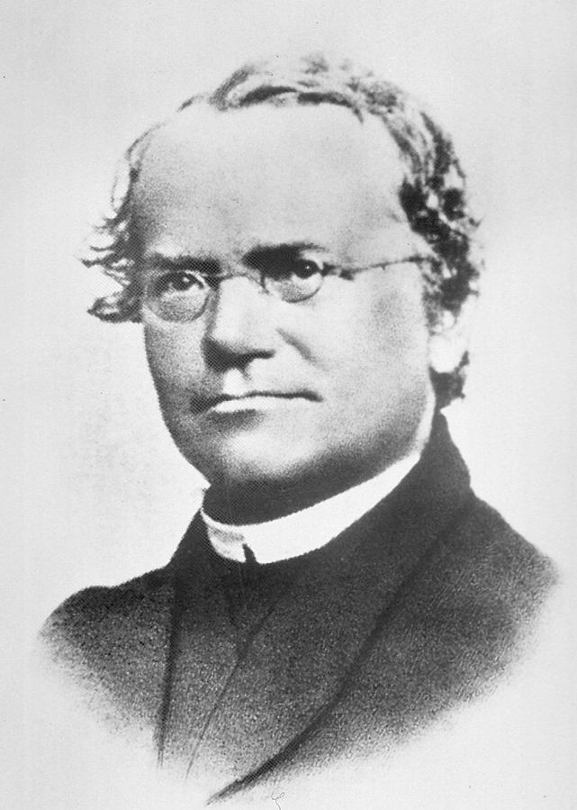

GENÉTICA
Nesse site, você encontrará informações sobre biologia, mais especificamente, sobre genética. A seguir estão os tópicos a serem estudados:
A genética sempre foi uma área de estudo de diversos cientistas ao longo dos século. Da teoria da pangênese até a teoria dos cromossomos, muitas tentativas foram feitas. Um dos grandes pioneiros da genética moderna é Gregory Mendel, que descobriu a recessividade e dominância dos genes em seu estudo sobre as ervilhas.
 Gregory Mendel